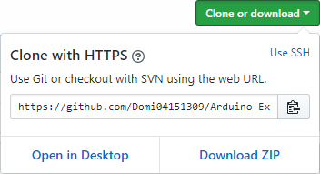
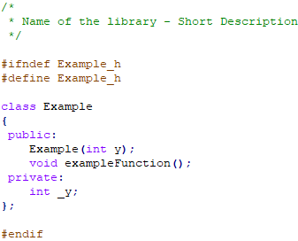
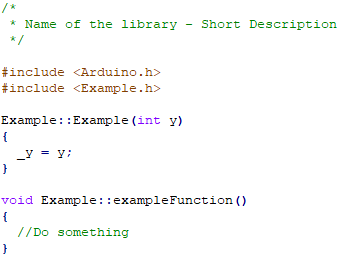

In this tutorial you will learn how to make your own Arduino library.
First download the example from here.

Then open all the files and edit them.
In the CPP-file you write the code and in the H-file you write the function names like it is shown with the exampleFunction().

H-file

CPP-file
Supported programming languages are C and C++ but you can just use the arduino-functions as well.
In "keywords.txt" you determine which words the Arduino IDE marks and how it does it.
You can use the following keyword identifiers:
KEYWORD1
KEYWORD2
KEYWORD3
LITERAL1
LITERAL2
RESERVED_WORD
RESERVED_WORD2
DATA_TYPE
PREPROCESSOR
In "library.properties" you determine the properties of the library.
You can use the following fields:
name - the name of the library
version - the version of the library
author - the author of the library
maintainer - the maintainer of the library
sentence - explains the purpose of the library
paragraph - a longer description of the library
category - Display, Communication, Signal Input/Output, Sensors, Device Control, Timing, Data Storage, Data Processing, Other
url - the URL to the page of the library
architectures - a list of supported architectures
dot_a_linkage - true for another compilation
includes - the files to include when you include the library
precompiled - true for the use of .a and .so files
ldflags - the linker flags to add
You can also add examples in the examples-folder for other people who want to use your library.
Now you know how to make your own Arduino library.
For more information see the official tutorial
and the GitHub-wiki page.